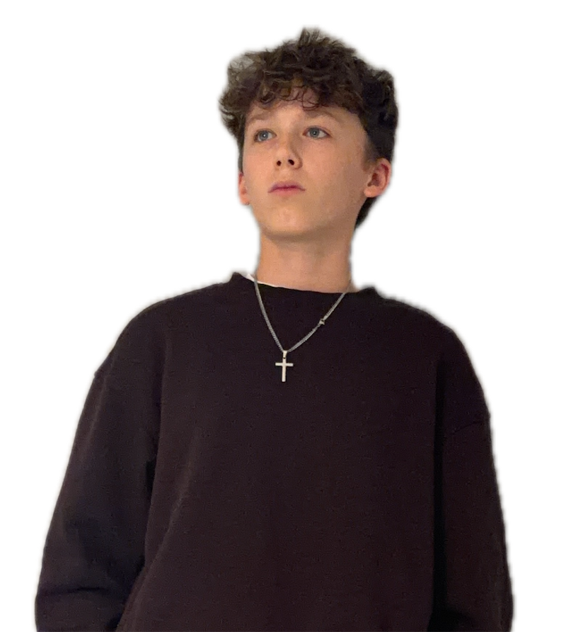

Who is Ethan Dunn?
Hi, I’m Ethan. I’m 15, I’m a freshman, and I like building things people actually use.
I’m a founder. I grew Kovrio, a free AP study app, to 70 users with no ads and no budget. Now I’m focused on Rilo, a screen-time buddy for iPhone that connects with you, rewards you for staying off your phone, and gives you ideas for what to do instead.
I’m a builder who grinds Claude Code sessions until I fall asleep. I’m always working on something: a new app, a new tool, a new idea. At my first hackathon, my project AirWrite took second place.
I’m a content creator. My Instagram has 4,000 followers and over 400,000 views in the last 30 days. I also make UGC for Whop, which is how I made my first dollar online.
I’m a student. I’m taking three AP classes and a dual-credit business class, including a math class three years ahead, and I’m in FBLA.
I’m an athlete, too. I’ve played basketball for over a decade, and I recently got into golf.
Jesus is more important to me than anything. My favorite verse is Philippians 4:13: “I can do all things through Christ who strengthens me.”
If you’re working on something interesting, or you think we should build something together, I’d like to hear about it.